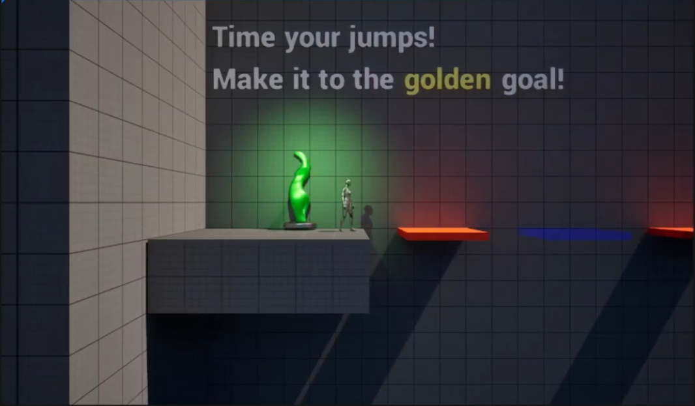

Rhythm Platformer

The Rhythm Platformer was an audio-focused prototype that allowed me to explore the relationship between music, timing, and gameplay mechanics. Using Unreal Engine 5's Quartz Clock system, I developed a platforming experience in which platforms would dynamically change and swap in synchronisation with the music's BPM.
During the development of this prototype, I sought to better understand how rhythm-based mechanics can influence player movement and decision-making. Alongside implementing the synchronisation systems, I explored the technical challenges involved in maintaining accurate timing between gameplay events and audio playback. This project helped deepen my understanding of audio programming, gameplay timing, and how music can be integrated directly into core game mechanics to create engaging player experiences.